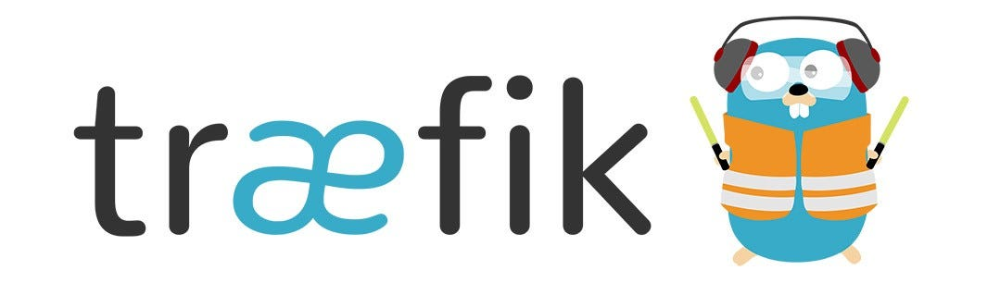

Setting up reverse proxy using Traefik
Traefik is a leading modern open source reverse proxy and ingress controller that makes deploying services and APIs easy. Traefik integrates with your existing infrastructure components and configures itself automatically and dynamically.
Traefik takes care of :
- Auto renewal of SSL certificates: Traefik can automatically renew SSL certificates using Let's Encrypt, ensuring that your services always have valid certificates without manual intervention.
- Dynamic Configuration: Traefik can automatically discover new services and update its routing rules without requiring a restart. This is particularly useful in dynamic environments like Docker or Kubernetes.
- Others feature like load balancing, monitoring, and middleware for custom properties and much more.
This will allow us to expose our application to the internet and handle incoming requests efficiently.
Getting started with Traefik
- Log in to the VM.
- Simply start the Traefik container using the following docker compose file:
services:
traefik:
image: "traefik:v2.11"
container_name: "traefik"
command:
# Base config
- "--providers.docker=true"
- "--providers.docker.exposedbydefault=false"
- "--api.dashboard=true"
# Entrypoints
- "--entrypoints.web.address=:80"
- "--entrypoints.websecure.address=:443"
# Logging
- "--log.level=DEBUG"
- "--accesslog=true"
- "--api.insecure=true"
# Let's Encrypt configuration using DNS challenge
# Uncomment the below lines to use DNS challenge with Cloudflare
# - "--certificatesresolvers.letencrypt.acme.dnschallenge=true"
# - "--certificatesresolvers.letencrypt.acme.dnschallenge.provider=cloudflare"
# - "--certificatesresolvers.letencrypt.acme.dnschallenge.delaybeforecheck=10"
# - "--certificatesresolvers.letencrypt.acme.email=rahul@newtuple.com"
# - "--certificatesresolvers.letencrypt.acme.storage=/certs/acme.json"
# - "--certificatesresolvers.letencrypt.acme.caServer=https://acme-staging-v02.api.letsencrypt.org/directory"
# Let's Encrypt configuration using HTTP challenge
# Uncomment the below lines to use HTTP challenge
- "--certificatesresolvers.myresolver.acme.email=traefik.yourdomain.com"
- "--certificatesresolvers.myresolver.acme.storage=/letsencrypt/acme.json"
- "--certificatesresolvers.myresolver.acme.httpchallenge=true"
- "--certificatesresolvers.myresolver.acme.httpchallenge.entrypoint=web" # Use HTTP challenge on port 80
ports:
- "80:80"
- "443:443"
- "8080:8080"
# environment:
# - TZ=Europe/Amsterdam
# - CF_DNS_API_TOKEN=${CF_DNS_API_TOKEN} # Uncomment if using Cloudflare DNS challenge
# - CF_API_EMAIL=${CF_API_EMAIL} # Uncomment if using Cloudflare DNS challenge
volumes:
- "/var/run/docker.sock:/var/run/docker.sock:ro"
- ./traefik.yml:/traefik.yml:ro
- ./certs:/certs
networks:
- traefiknet
deploy:
resources:
limits:
cpus: '0.50'
memory: 512M
restart: unless-stopped
## Additional labels for Traefik
# labels:
# # Enable Traefik for itself (dashboard)
# - "traefik.enable=true"
# # --- HTTP to HTTPS Redirect ---
# # 1. Define the middleware
# - "traefik.http.middlewares.https-redirect.redirectscheme.scheme=https"
# # 2. Create a router that captures all HTTP traffic
# - "traefik.http.routers.http-catchall.rule=hostregexp(`{host:.+}`)"
# - "traefik.http.routers.http-catchall.entrypoints=web"
# - "traefik.http.routers.http-catchall.middlewares=https-redirect"
# # --- Traefik Dashboard Router (HTTPS) ---
# - "traefik.http.routers.dashboard.rule=Host(`traefik.yourdomain.com`)"
# - "traefik.http.routers.dashboard.service=api@internal"
# - "traefik.http.routers.dashboard.entrypoints=websecure" # Use HTTPS entrypoint
# - "traefik.http.routers.dashboard.tls=true" # Enable TLS
# - "traefik.http.routers.dashboard.tls.certresolver=letencrypt" # Specify Let's Encrypt resolver
# # --- Traefik Metrics Router (HTTPS) ---
# - "traefik.http.routers.metrics.rule=Host(`traefik.yourdomain.com`) && Path(`/metrics`)"
# - "traefik.http.routers.metrics.service=prometheus@internal" # Route to internal prometheus service
# - "traefik.http.routers.metrics.entrypoints=websecure" # Use HTTPS entrypoint
# - "traefik.http.routers.metrics.tls=true" # Enable TLS
# - "traefik.http.routers.metrics.tls.certresolver=letencrypt" # Specify Let's Encrypt resolver
volumes:
traefik:
networks:
traefiknet:
name: traefiknet
driver: bridge
Now any service can managed by treafik by adding the following labels to the service in your docker compose file:
services:
# Example service to test Traefik, where you can just add labels to your service
# and it will be automatically configured by Traefik
# and will be accessible at http://whoami.yourdomain.com
whoami:
image: "traefik/whoami"
container_name: "simple-service"
labels:
- "traefik.enable=true"
- "traefik.http.routers.whoami.rule=Host(`whoami.yourdomain.com`)"
- "traefik.http.routers.whoami.entrypoints=websecure" # Use HTTPS entrypoint
# - "traefik.http.routers.whoami.entrypoints=web" # Use HTTP entrypoint
- "traefik.http.routers.whoami.middlewares=https-redirect" # Redirect HTTP to HTTPS
- "traefik.http.routers.whoami.tls=true"
- "traefik.http.routers.whoami.tls.certresolver=letencrypt"
- "traefik.http.services.whoami.loadbalancer.server.port=3000"
networks:
traefiknet:
name: traefiknet
driver: bridge
external: true
- The above configuration sets up Traefik to listen on ports 80 and 443 for HTTP and HTTPS traffic, respectively.
- It also sets up a dashboard for Traefik that can be accessed at
http://traefik.yourdomain.com:8080(make sure to replaceyourdomain.comwith your actual domain). - The
whoamiservice is a simple test service that will respond with its hostname and IP address. You can access it athttp://whoami.yourdomain.com. Similarly, you can add your own services to the Traefik configuration by adding labels to the respective service in your Docker Compose file and make sure it's own traefik docker network. - The
traefik.ymlfile contains the Traefik configuration, and thecertsdirectory is used to store the Let's Encrypt certificates. - The
CF_DNS_API_TOKENenvironment variable is used for DNS challenge with Cloudflare. Make sure to set it up in your environment and check more providers here. - You can add more services to the Traefik configuration by adding labels to the respective service in your Docker Compose file.
- You can also set up Let's Encrypt for automatic SSL certificate generation and renewal.
-
Add custome headers, properties like file files, rate limiting, authentication using traefik middleware.
-
You can also access your application using the domain name if you have set up a DNS record pointing to your VM's public IP address.